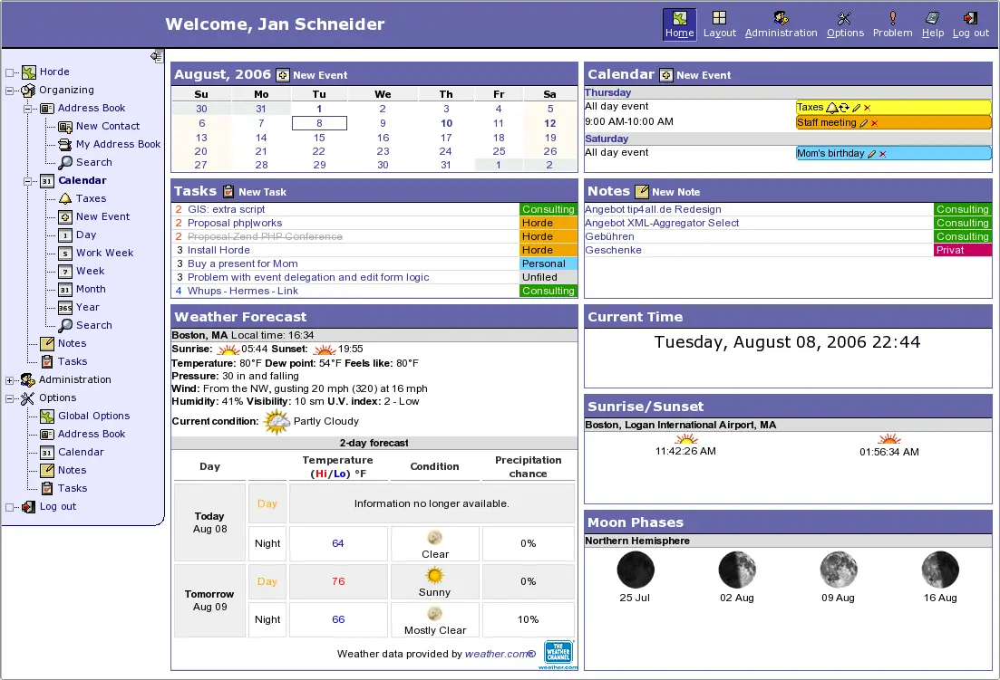

定义
被替换的 Astro 代码教程不适合这套语料：它是框架步骤，没有要保护的 B2B 事实。真正有用的问题比任何框架都更老。静态 URL 是一份文档。动态屏幕只有在它的地址返回该主题的文字时才是文档。本地化然后让这段文字在语言之间对齐。英语留在根目录。中文留在 /zh/。不要增加 /en/。
短答
静态规格页和动态配置器要描述同一个产品，就必须让每个 URL 的一次获取都在 HTML 里返回相同的产品名、规格和限值。只改限值、却没有文档的视图，不是本地化方法。

哪些字段必须说同一件事
在公司名、产品名、规格、应用和说法中的条件上比较静态页和动态 URL。如果动态页只在脚本运行后才注入限值，就要确认：不依赖未写明的私有状态时，一次获取仍然返回你打算索引的那句话。
页面上的问题
把语言标记塞进同一个空壳的近重复 URL，不是覆盖。它们是副本。保留真正的文档，并给它一个语言对照页：事实相同，同时对该市场的问题有真正的深度。
随页面一起走的信号
hreflang 应当互相指向这些真正的文档，x-default 放在英文。同一个壳里仅靠片段标识的状态，不是另一种语言的 URL。
本篇用 B2B 页面仍须满足的规则，替换一篇代码教程。 Mika Visibility 要求每种已发布的语言保留同一套公司名、产品名、规格和应用，同时允许该市场的问题有真正的深度。英语在站点根目录，中文在 /zh/，不要增加 /en/ 前缀。hreflang 使用 en、zh-Hans，以及指向英文 URL 的 x-default。健康分数不会自动变成增长分数。
要检查什么
- 获取静态 URL 和动态 URL，比较限值。
- 要求可索引的句子在 HTML 里。
- 不要为空壳制造语言副本。
- hreflang 指向文档，而不是片段状态。
它不声称什么
在静态和动态 URL 上发布同一套事实，不保证排名或 AI 引用。Mika 不承诺某种渲染方式会被偏好。
一个结构示例
这是教学示例，不是框架跑分。静态页列出泵型号 P-18 和最大扬程。配置器 URL 在点击菜单后显示 P-18 和更高的扬程，而获取到的 HTML 里只有菜单。修复要么让真实 URL 的 HTML 打印所选扬程，要么保留一份写明范围的文档。然后复审。不声称任何性能奖。
常见问题
静态页面和动态视图何时描述的是同一个产品？
静态规格页和动态配置器要描述同一个产品，就必须让每个 URL 的一次获取都在 HTML 里返回相同的产品名、规格和限值。只改限值、却没有文档的视图，不是本地化方法。
为什么替换那篇框架教程？
被替换的 Astro 代码教程不适合这套语料：它是框架步骤，没有要保护的 B2B 事实。真正有用的问题比任何框架都更老。静态 URL 是一份文档。动态屏幕只有在它的地址返回该主题的文字时才是文档。本地化然后让这段文字在语言之间对齐。英语留在根目录。中文留在 /zh/。不要增加 /en/。
这条渲染建议能保证排名吗？
在静态和动态 URL 上发布同一套事实，不保证排名或 AI 引用。Mika 不承诺某种渲染方式会被偏好。
下一步
做一次结构化的 SEO 与 GEO 审计，看健康发现、增长缺口，以及可以执行的蓝图。
更清楚的实体、回答、证据和上下文，让页面更容易被理解和转述。任何回答产品中的结果都不保证。